More Geometry and Trig¶
Now you should have a good grasp of geometry and trig basics. In this chapter
we'll learn more stuff and focus on some of the things that you might be
wondering after reading the previous chapter. Here  axises go up instead of
down because most of the math in this isn't as useful for programming as the
stuff in the first geometry and trig chapter.
axises go up instead of
down because most of the math in this isn't as useful for programming as the
stuff in the first geometry and trig chapter.
This chapter assumes that you have read the first geometry and trig chapter, and you also need derivatives for some things that will be shown here.
Pythagorean Theorem Proof¶
This is a well-known proof and I like it because it's simple.
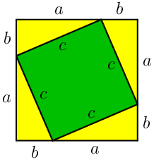
Handy thing: 
Proof:

We can calculate the total area of the above square in a couple different ways:
- The square's sides are each
 , so the area must be
, so the area must be  .
. - The square consists of the green square whose area is
 and 4 yellow
triangles with area
and 4 yellow
triangles with area  each. Total area is
each. Total area is
 .
.
We must get the same area with both ways, so we get this equation:

Triangle Angle Sum¶
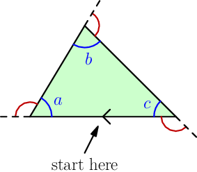
In the above picture, the red angle is a half turn minus the blue angle, and we know that half turn is 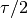 radians. So, let's start at the little arrow at bottom and move along the edges clockwise until we arrive at the arrow again. The red angles represent how much we need to turn at each corner, and those turns are 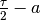, 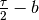 and 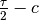.
But in total we turned a full turn or  radians:
radians:
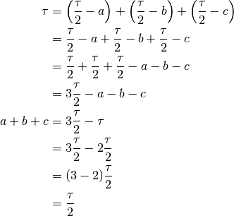
So if we add together all the angles of a triangle we get a half turn. This doesn't seem very amazingly impressive but we'll find this useful later.
Unit circle or triangle?¶
Sine and cosine can be defined with a unit circle or with a triangle. The
triangle definition is handy for simple things, but it's usually easiest to use
the unit circle if you need to work with angles that are not between  and
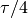 radians.
and
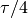 radians.
Let's make sure that the definitions are compatible with each other:

We get this by applying triangle trig to the yellow triangle:

The first two formulas are obviously true with any  , but the last one is a
bit more interesting. We found another way to define
, but the last one is a
bit more interesting. We found another way to define  , and it
also works with a triangle:
, and it
also works with a triangle:

Accurate Sine and Cosine Values¶

Here I said that
 and
and  .
I'm sorry to disappoint you, but there's no general and easy way to find
accurate
.
I'm sorry to disappoint you, but there's no general and easy way to find
accurate  and
and  values by hand. However, in many cases there's
something special about the angles that allows us to do some other tricks.
values by hand. However, in many cases there's
something special about the angles that allows us to do some other tricks.
The angle in question is  , a sixth of a turn. If a triangle has
three sides with equal lengths, the angles will be each. That's
why we can complete the triangle drawn in unit circle like in the image. The
angles at top are
, a sixth of a turn. If a triangle has
three sides with equal lengths, the angles will be each. That's
why we can complete the triangle drawn in unit circle like in the image. The
angles at top are  because two angles added
together is .
because two angles added
together is .
The radius of the unit circle is 1, so we get this on the  axis:
axis:

Now we can apply the Pythagorean theorem (proved above)
to the yellow triangle and figure out  :
:

We know that is positive, so
 .
.
Applying the Pythagorean theorem gave us
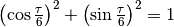, and that isn't
limited to  in any way. We could draw a similar yellow triangle with
any angle and we'd get the same result, so 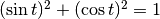 with
any .
in any way. We could draw a similar yellow triangle with
any angle and we'd get the same result, so 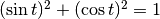 with
any .
Why is cosine called cosine?¶
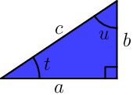Let's have a look at the blue triangle. We know that it's a triangle, so the sum of angles must be .
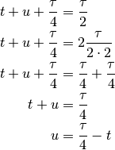
We also know these things:
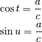
So, 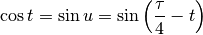.
Only angles between 0 and make sense as triangle corners, but this works with any other angle as well. Just look at the graphs; the offset is quite obvious.
The angle  is also known as the complement angle because when
added together, the angles "complete" to :
is also known as the complement angle because when
added together, the angles "complete" to :
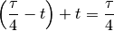
Actually "cos" is short for "complement sine" as it's just the sine of the complement.
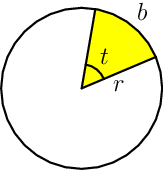Derivative of Sine¶
Let's start by finding the derivative of in radians.
By definition, the angle in the image at right is 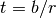 radians. But if we do the same thing in a unit circle we know the radius is 1, so 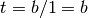. This is one of the reasons why the unit circle and radians are so handy.
Here's another drawing with more stuff in it:

Here we have  in two different places and you should understand how.
The bottom of the blue area is parallel with the x axis, and that's how
appears there as well.
in two different places and you should understand how.
The bottom of the blue area is parallel with the x axis, and that's how
appears there as well.
If we take and we take away we're left with the height of the blue area, so the blue area's height is 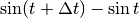.
The blue area is kind of like a triangle, and with a very small it's
even more like a triangle. Let's draw a picture of just that:
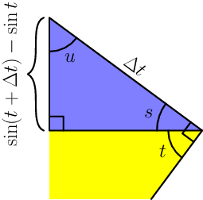
You might be just looking at this and feeling like 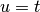, but let's prove that correctly. Based on the drawing, 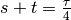 because they add up to a quarter-turn corner, and 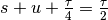 because we can use the triangle angle sum.
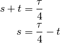
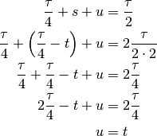
Now we can apply triangle trig to the . I'm using  here because the
line is actually a bit curvy in the circle image.
here because the
line is actually a bit curvy in the circle image.
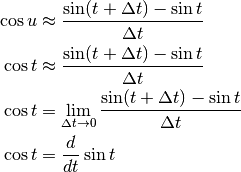
I think this is quite nice.
Derivative of Cosine¶
Based on the graphs, sin and cos are the same
thing but with a small offset. We know that 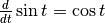, so
finding the derivative of just shifted the graph a bit. The graph of
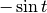 looks a lot like what might be the derivative of 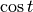:
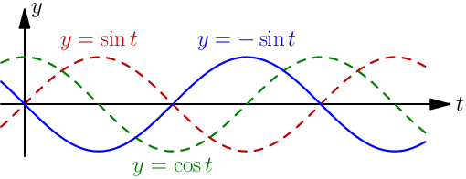
Let's prove that 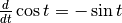. This will be much easier than
the derivative because now we know that
and , see
above. We just need to remember the chain
rule.
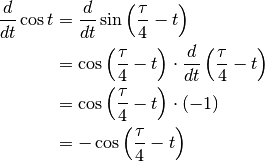
Now we just need to prove that  using our thing.
using our thing.
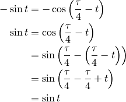